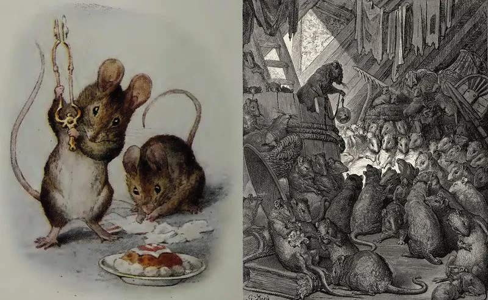
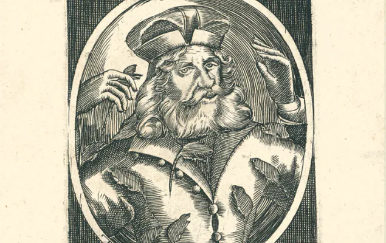
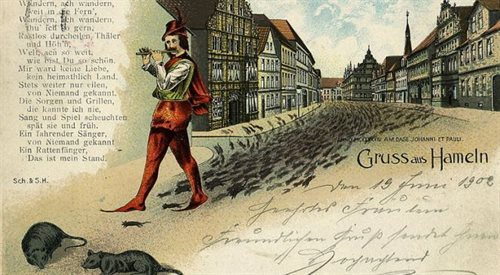
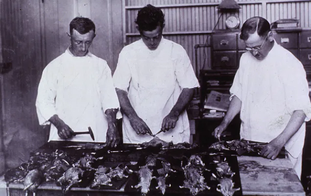
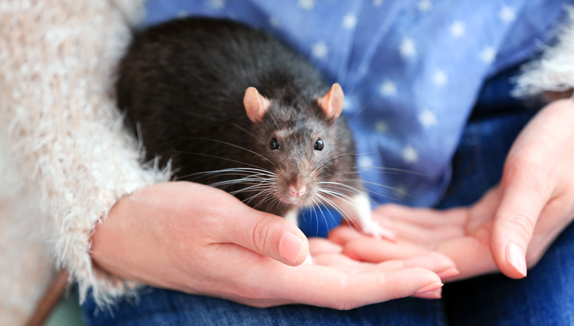
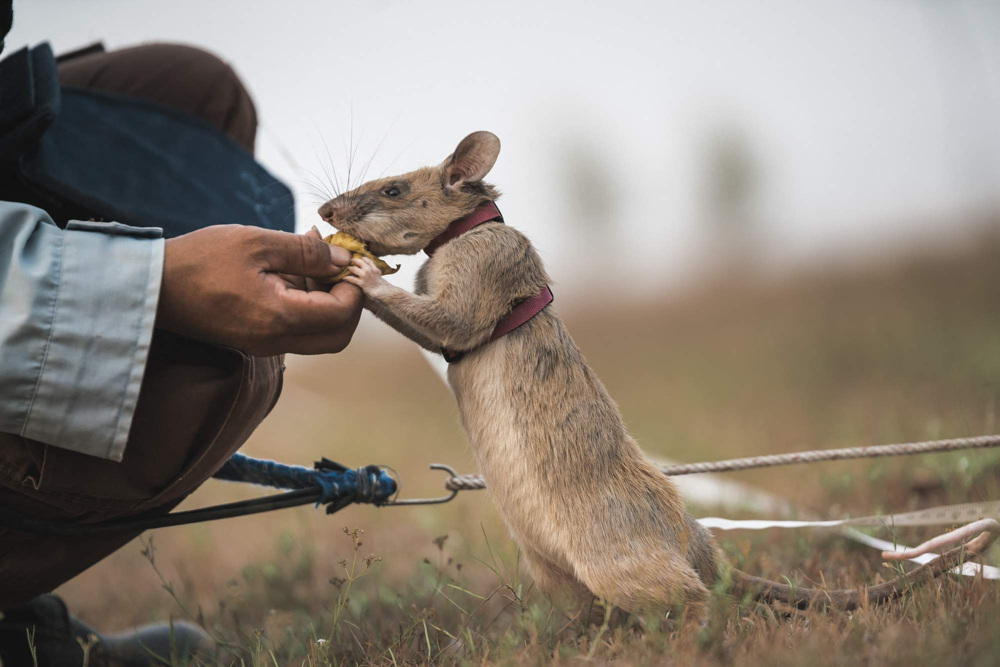

Historia szczurów - Cień człowieka
Jest jednym z tych zwierząt, które wzbudzają w człowieku wielki lęk. Ale nie tylko. Szczur jest również od stuleci obiektem ludzkiej fascynacji, o czym świadczy choćby liczba dzieł sztuki, które mu poświęcono.Być może zabrzmi to paradoksalnie, ale często dopatrywano się podobieństw między szczurami a ludźmi. Amerykański bakteriolog Hans Zinssner w książce ''Rats, Lice and History'' nazywa te gryzonie ''cieniem człowieka'', ponieważ bytują one po mrocznej stronie ludzkiej egzystencji.
"Rodzaj ludzki i szczur odniosły jak na razie największy sukces. Niszczą inne formy życia. Nie służą żadnemu innemu żyjącemu gatunkowi... Stopniowo opanowały glob, dotrzymując sobie kroku, nie będąc w stanie nawzajem się zniszczyć, choć są sobie nieustannie wrogie... i, inaczej niż pozostałe gatunki, toczyły wojny w obrębie swych własnych rodzajów'' - pisał naukowiec w 1935 r.
Z kolei współczesny pisarz Robert Sullivan w książce "Rats: Observations on the History and Habitat of the City’s Most Unwanted Inhabitants" zwrócił uwagę na to, że ''szczury żyją w świecie równoległym do naszego, trwają dzięki ściekom ludzkiej społeczności... Myślę o nich jako o gatunku lustrzanym, odwróconym lecz podobnym".

Narzędzie bożej sprawiedliwości
Dziś szczur często kojarzy się z brudem i chorobami. Ale jeszcze w średniowieczu i nowożytności nie kojarzono go z tymi rzeczami. Patrzono na niego jak na szkodnika, który wyjada ludziom ich skąpe zapasy jedzenia. Jednak w wiekach średnich szczur nie zawsze grał rolę czarnego charakteru. Zachowały się podania, w których ten gryzoń pojawia się jako narzędzie boskiej woli i wykonawca bożej sprawiedliwości.Tak jest w opowieści o biskupie Hatto, który ukrywał zboże w czasach głodu. Za ten postępek został żywcem zjedzony przez szczury. Ofiarą żarłocznych gryzoni miał być również legendarny Popiel, co było karą za to, że otruł swoich stryjów. Co prawda, według podań skończył on w przepastnych żołądkach myszy a nie szczurów. Ale - zdaniem niektórych badaczy - wydaje się to być wariant tego samego schematu mitologicznego, zgodnie z którym gryzonie są wykonawcą wyroków Opatrzności.
"Szczur jest rozumiany jako ogniwo łączące przeszłość pogańską i chrześcijańską. To, że szczur jest stworzeniem najwłaściwszym, by karać chciwość i skąpstwo, sprawia, że ucieleśnia on w sobie rodzaj sprzyjającej magii'' - pisze w książce ''Szczur'' Jonathan Burt. Badacz wskazuje na jeszcze jeden ciekawy moralistyczny wątek tej legendy. Mnogość szczurów bądź myszy, która karze winowajcę ''wywodzi się przede wszystkim z naszych nadmiernych wymagań, chciwości ludzkich dążeń, przepełnienia magazynów żywności".

Zemsta flecisty
Chęć uchronienia się przed negatywnymi skutkami szczurzej aktywności dało w średniowieczu początek nowej grupie zawodowej - szczurołapom. Zwierzęta odławiali początkowo ręcznie. Jak się można spodziewać, wiązało się to z ryzykiem odniesienia obrażeń, które - poza niewątpliwą bolesnością - mogły prowadzić do chorób lub nawet śmierci w wyniku zakażeń. Zaczęto więc stosować różne, z czasem coraz wymyślniejsze, pułapki. Potem pojawiły się trutki.Z postacią szczurołapa związana jest legenda o fleciście z Hameln. W XIV w. mieszkańcy tego niemieckiego miasta mieli poprosić go o likwidację szczurzej plagi. Ten, grając na cudownym flecie, wyprowadził zasłuchane zwierzęta za mury. I utopił je w Wezerze.
Jednak nieuczciwi mieszczanie ani myśleli płacić szczurołapowi za wykonaną pracę. Deratyzator zemścił się w wyjątkowo straszny sposób. Grając na swoim flecie wywiódł z miasta wszystkie dzieci. Ani swoich potomków, ani szczurołapa mieszkańcy Hameln nigdy już nie zobaczyli.

Nosiciel zarazy
W XIX w. doszło do zasadniczej zmiany wizerunku szczura. Mitologiczne, wywodzące się zapewne jeszcze z przedhistorycznych czasów, wyobrażenie szczura ustąpiło jego nowemu wizerunkowi. A ten wziął się z nauki, która w wieku węgla i pary przeżywała dynamiczny rozwój. Odkryto, że szczury mogą być roznosicielami śmiertelnie niebezpiecznych dla człowieka chorób.Wtedy też odnaleziono powiązanie między tymi zwierzętami a dżumą. Już we wcześniejszych czasach zauważano, że podczas epidemii masową śmierć ludzi poprzedza równie masowe umieranie tych zwierząt. Charles Creighton w monumentalnej ''History of Epidemics in Britain'' (1891-1894 r.) przytoczył liczne relacje historyczne z obszaru Azji, które na to wskazywały. W jednej z nich - pochodzącej z Indii - czytamy: "W domach rodzin, które zostały dotknięte chorobą, szczury są czasem znajdowane martwe na podłodze; Planck sam to widział; wszystkie, które ujrzał, wydawały się umrzeć nagle, jakby przez uduszenie, ich ciała były w dobrym stanie, a między zębami niekiedy miały kawałki szmat".
Ale dopiero w 1898 r. francuski badacz Paul-Louis Simond pokazał, że nosicielem choroby jest szczur, a dokładnie pchła, która na nim żeruje. Swej hipotezy dowiódł umieszczając w jednej butelce zdrowego szczura i jego zapchlonego oraz umierającego na dżumę pobratymcę. Wkrótce u pierwszego zwierzęcia wystąpiły objawy choroby i zdechło.

Męczennik nauki
Nauka dostrzegła w szczurze doskonałe zwierzę laboratoryjne. Na przełomie XIX i XX w. gryzonie stały się elementem wyposażenia gabinetów naukowych i pracowni badawczych.Dla celów postępu wiedzy wyhodowano białego szczura o charakterystycznych różowych oczach. Tak w 1915 r. zachwycał się tymi zwierzętami Henry M. Donbaldson, autor poświęconej im monografii: ''Albinosy są czyste, łagodne, łatwe oraz niedrogie w utrzymaniu i hodowli. Szczur chętnie ćwiczy i łatwo go wytrenować. Jest też bardzo odporny na infekcje. Wydaje się bardzo odpowiedni dla różnego rodzaju badań''.
I rzeczywiście, w ciągu ostatnich 100 lat na ołtarzu nauki poświęcono niezliczoną liczbę tych zwierząt. Anatomowie rozcinali ich ciała, medycy zarażali je najstraszniejszymi chorobami a psychologowie kazali im szukać wyjścia z zawiłych labiryntów. ''Prawie cztery wieki nauki o szczurach dały nam informacje o wszystkim, od struktury anatomicznej i genetyki aż po choroby takie jak rak i zawał serc a, od prac o systemie nerwowym do wiadomości dotyczących uczenia się, emocji i pamięci'' - pisze Jonathan Burt.

Domowa maskotka
Paradoksalnie, to właśnie w XIX w. - stuleciu, która dostrzegło w nim siewcę zarazy - szczur stał się hobby. Zaczęto go bowiem trzymać w domach jako maskotkę i ulubieńca rodziny.Mnożyły się stowarzyszenia hodowców i miłośników tych zwierząt. W 1895 r. magazyn ''Fur and Feather'' polecał szczury jako ''świetne wyjście dla tych, którzy mieszkają w miastach i są bardzo zajęci''.
W 1901 r. szczur po raz pierwszy pojawił się na pokazie zwierząt domowych. W Aylesbury w Wielkiej Brytanii wybrano też pierwszą "szczurzą piękność". Zwycięzcą w kategorii ''Szczury, dowolnego rodzaju'' był zwierzak panny Mary Douglas. Jury doceniło m.in. jego ''równomierne umaszczenie'' oraz ''piękne wystrzyżenie gryzonia''. Panna Douglas, wielka miłośniczka szczurów, przeszła do historii jako ''matka szczurzego hobby''.

Szczurzy saperzy
Szczur budził obrzydzenie również z tego powodu, że był stałym rezydentem pól bitewnych, na których swoje wojny toczył człowiek. We znaki dał się żołnierzom podczas I wojny światowej. Pożerał leżące na pasie ''ziemi niczyjej'' ciała poległych kolegów i wyżerał zapasy. W końcu stał się taką plagą, że żołnierze polowali na niego w równym stopniu dla zabicia czasu, jak i z konieczności ochrony pożywienia."Jednem z największych utrapień żołnierzy na polu bitwy są szczury, które w coraz większych gromadach przybiegają ze wszystkich stron i formalnie napełniają rowy strzeleckie oraz nakrywki. Pomimo więcej niż prymitywnej sposobności do spania niejeden żołnierz na polu bitwy mógłby spocząć w nocy, gdyby mu szczury nie pożarły przedtem materacu i nie spacerowały w nocy po jego derze i po twarzy" - pisano w "Dzienniku Poznańskim" 8 marca 1916 r.
Dziś - choć brzmi to nieprawdopodobnie - szczura wykorzystuje się dla usuwania skutków wojny.W Afryce tresuje się wielkoszczura gambijskiego do... poszukiwania min. Zwierzę ma wyczulony węch i reaguje na zapach trotylu. Szczury uczy się, by sygnalizowały odnalezienie ładunku za pomocą drapania. Ich niska masa ciała sprawia, że wchodząc na minę nie powodują jej wybuchu.
